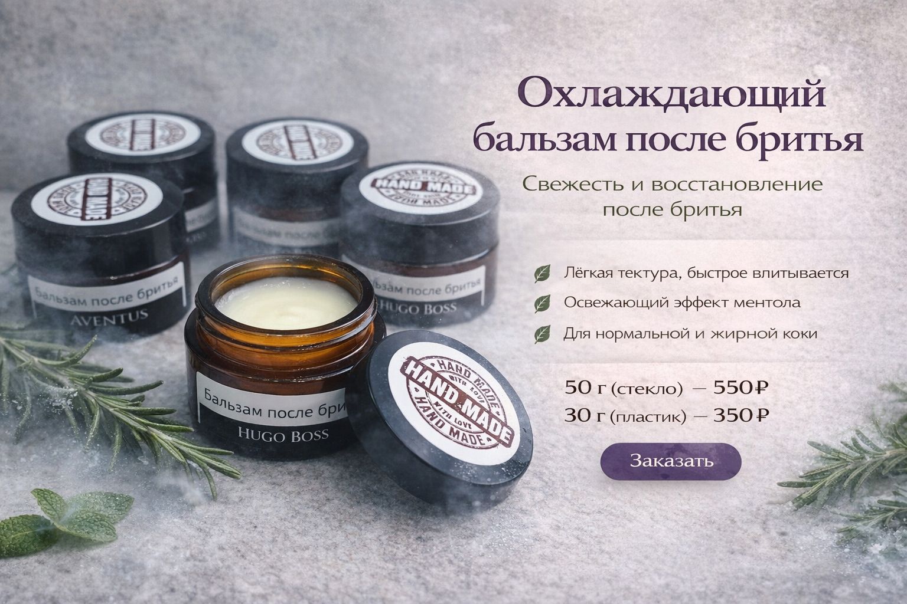

Когда это про вас
По каким ощущениям обычно выбирают это направление
Здесь удобнее выбирать средства, которые быстро возвращают коже комфорт после бритья и подходят для ежедневного ухода без липкости и сложной схемы.
Сюда стоит идти, когда после бритья кожа краснеет, щиплет или просто не любит тяжёлый уход. Здесь проще выбрать между мягким комфортом и более свежим охлаждающим вариантом.

Здесь удобнее выбирать средства, которые быстро возвращают коже комфорт после бритья и подходят для ежедневного ухода без липкости и сложной схемы.
Если после бритья нужен мягкий кремовый комфорт, смотрите классический бальзам. Если нравится охлаждение и более бодрое ощущение, подойдёт формула с ментолом.
Откройте карточку, сравните формат, цену и ощущение от средства, а уже потом решайте, нужен ли именно этот вариант.

Комфортный увлажняющий и питательный бальзам после бритья, который можно использовать и как дневной или ночной крем.

Освежающий бальзам с ментолом и розмарином для тех, кто любит после бритья бодрящий охлаждающий эффект.
Лёгкий мужской тонер на основе гидролата — для свежести, комфорта и подготовки кожи к бальзаму или крему после бритья.
Нет. Несколько формул можно использовать и как обычный мужской крем утром или вечером, если нравится их текстура и ощущение на коже.
Да. В линии есть и более мягкие бальзамы без ментола, и освежающие варианты для тех, кто любит холодящий эффект после бритья.
С того, что ближе вашей привычке: мягкий бальзам на каждый день или более свежая формула именно после бритья. После этого уже проще открыть конкретную карточку.